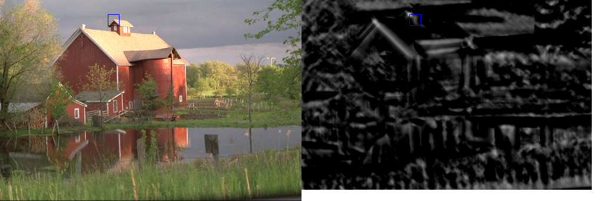

| Safe Haskell | None |
|---|---|
| Language | Haskell2010 |
OpenCV.ImgProc.ObjectDetection
- data MatchTemplateMethod
- data MatchTemplateNormalisation
- matchTemplate :: depth `In` [Word8, Float] => Mat (S [sh, sw]) (S channels) (S depth) -> Mat (S [th, tw]) (S channels) (S depth) -> MatchTemplateMethod -> MatchTemplateNormalisation -> CvExcept (Mat (S [rh, rw]) (S 1) (S Float))
Documentation
data MatchTemplateMethod Source #
Type of the template matching operation
In the formulae for the comparison methods \(\bf{I}\) denotes image,
\(\bf{T}\) template and \(\bf{R}\) result. Each method supports
normalization. See MatchTemplateNormalisation.
Constructors
| MatchTemplateSqDiff |
|
| MatchTemplateCCorr |
|
| MatchTemplateCCoeff |
|
Instances
data MatchTemplateNormalisation Source #
Whether to use normalisation. See MatchTemplateMethod.
Constructors
| MatchTemplateNotNormed | Do not use normalization. |
| MatchTemplateNormed | Use normalization. |
Arguments
| :: depth `In` [Word8, Float] | |
| => Mat (S [sh, sw]) (S channels) (S depth) | Image where the search is running. It must be 8-bit or 32-bit floating-point. |
| -> Mat (S [th, tw]) (S channels) (S depth) | Searched template. It must be not greater than the source image and have the same data type. |
| -> MatchTemplateMethod | Comparison method. |
| -> MatchTemplateNormalisation | Normalization. |
| -> CvExcept (Mat (S [rh, rw]) (S 1) (S Float)) | Map of comparison results. It must be single-channel 32-bit floating-point. If image is \(W \times H\) and templ is \(w \times h\), then result is \((W-w+1) \times (H-h+1)\). |
Compares a template against overlapped image regions.
The function slides through image, compares the overlapped patches of size \( w \times h \) against templ using the specified method and stores the comparison results in result. The summation is done over template and/or the image patch: \( x' = 0...w-1, y' = 0...h-1 \)
After the function finishes the comparison, the best matches can be found as
global minimums (when MatchTemplateSqDiff was used) or maximums (when
MatchTemplateCCorr or MatchTemplateCCoeff was used) using the minMaxLoc
function. In case of a color image, template summation in the numerator and each
sum in the denominator is done over all of the channels and separate mean values
are used for each channel. That is, the function can take a color template and
a color image. The result will still be a single-channel image, which is easier
to analyze.
Example:
matchTemplateImg
:: forall (width :: Nat) (height :: Nat) (width2 :: Nat)
. ( Mat (ShapeT [height, width]) ('S 3) ('S Word8) ~ Kodak_512x341
, width2 ~ (width + width)
)
=> Mat (ShapeT [height, width2]) ('S 3) ('S Word8)
matchTemplateImg = exceptError $
withMatM (Proxy :: Proxy [height, width2])
(Proxy :: Proxy 3)
(Proxy :: Proxy Word8)
transparent $ \imgM -> do
matCopyToM imgM (V2 0 0) barn_512x341 Nothing
rectangle imgM templateRect blue 1 LineType_8 0
matCopyToM imgM (V2 width 0) resultImg Nothing
rectangle imgM matchRect blue 1 LineType_8 0
where
-- Recovered location of template, translated for rendering.
matchRect :: Rect2i
matchRect = toRect $ HRect (fromPoint maxLoc ^+^ V2 width 0)
(V2 20 20)
-- Find location of best match in result.
_minVal, _maxVal :: Double
_minLoc, maxLoc :: Point2i
(_minVal, _maxVal, _minLoc, maxLoc) = exceptError $ minMaxLoc result
-- Result matrix converted to color image for rendering.
resultImg :: Mat ('S ['D, 'D]) ('S 3) ('S Word8)
resultImg = exceptError $ do
resultGray
:: Mat ('S ['D, 'D]) ('S 1) ('S Word8)
<- matConvertTo (Just 255) Nothing result
cvtColor gray bgr resultGray
-- Result of looking for template in barn_512x341.
result :: Mat ('S ['D, 'D]) ('S 1) ('S Float)
result = exceptError $
matchTemplate barn_512x341 template MatchTemplateCCoeff MatchTemplateNormed
-- Small part of the barn image which we want to find again.
template :: Mat ('S ['D, 'D]) ('S 3) ('S Word8)
template = exceptError $ matSubRect barn_512x341 templateRect
-- Rectangle that defines a small part of the barn image.
templateRect :: Rect2i
templateRect = toRect $ HRect (V2 183 24) (V2 20 20)
width :: Int32
width = fromInteger $ natVal (Proxy :: Proxy width)
